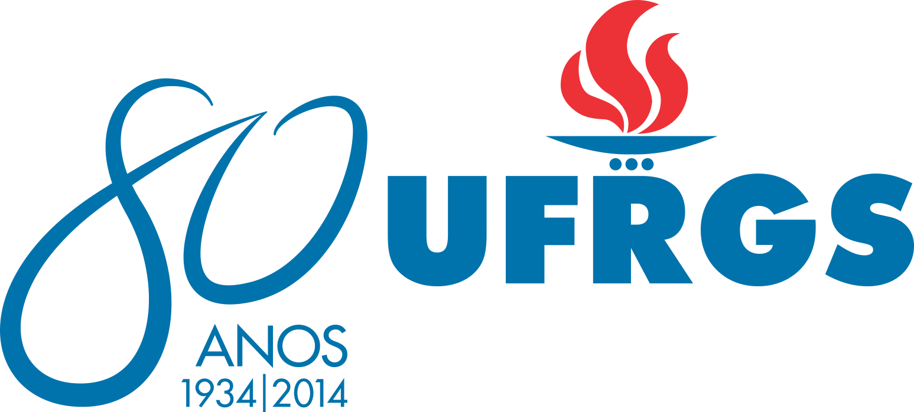

COLÓQUIO
INTERNACIONAL

DE JUSTIÇA JUVENIL NA CONTEMPORANEIDADE
| Abertura com concerto | |
| 09:00 - | Mesa de Abertura |
| 09:30 - |
Painel 1 - Desafios contemporâneos da Justiça Juvenil Coordenação da mesa:
|
| 17:00 - | Documentário do PIPA |
| 17:30 - |
Painel 2 - Intervenção Socioeducativa: Natureza e Perspectivas Coordenação da Mesa:
|
| 20:30 - |
Painel 3 - Adolescentes e a Intervenção Policial. Segurança Pública Cidadã, é uma Possibilidade? Coordenação da Mesa:
|
| 09:00 - |
Painel 4 - Justiça Juvenil: Desafio, na Perspectiva Jurídica Cotidiana. Coordenação da mesa:
|
| 17:00 - | Orquestra Villa Lobos |
| 17:30 - |
Painel 5 - Violência, Gênero e a Adolescência. Coordenação da Mesa:
|
| 20:30 - |
Painel 6 - Políticas Públicas em torno da Intervenção Socioeducativa. Coordenação da mesa:
|
| 09:00 - |
Painel 7 - Patologização da Intervenção Socioeducativa: a Medicalização Coordenação da Mesa:
|
| 17:00 - | Oficina do Coletivo Filas |
| 17:30 - |
Painel 8 - Tráfico de Drogas, Encarceramento e a Participação de Adolescentes na Sociedade de Massas Contemporânea Coordenação da Mesa:
|
| 20:30 - |
Painel 9 - As Proposições de Mudança Legislativa no Campo Socioeducativo Coordenação da mesa:
|
Este vídeo faz parte de um projeto aprovado pela Política Nacional de Extensão. A partir do edital do PROEXT-MEC (Programa de Extensão Universitária) de 2013, produziu-se um material didático-pedagógico para o atendimento de adolescentes em medida socioeducativa. Do projeto faziam parte um curso de vídeo e a produção de um vídeo documental junto com adolescentes para um público de técnicos e trabalhadores de medidas socioeducativas. Durante três meses de curso circularam dez adolescentes, entre idas e vindas, produzindo alguns materiais, paraque se apropriassem das técnicas e conhecimentos básicos para fazer um vídeo (roteiro, filmagem, edição, entrevista, fotografia, etc.). Ao longo do curso, os jovens foram deixando o curso por diversos motivos. O vídeo que inicialmente era para ser construído por adolescentes, a partir das suas experiências e ideias, agora não tinha mais adolescentes. Então, os educadores, assumiram certo protagonismo e desenvolveram o vídeo contando as histórias que estes jovens viveram durante o período em que estiveram juntos, traçando os rastros que estes deixaram em suas passagens...
Mães da Fase é um documentário de rádio que pretende relatar a história de vida e condição social de jovens em conflito com a lei a partir da visão de suas mães. Tendo como ponto de partida o trabalho do Coletivo Fila, a idéia é fazer com que essas mulheres sejam reconhecidas como sujeitos da sua própria história, dando voz a relatos tão silenciados. O documentário foi produzido por alunas e alunos do curso de Jornalismo da UFRGS, sob a orientação da professora Cida Godin.